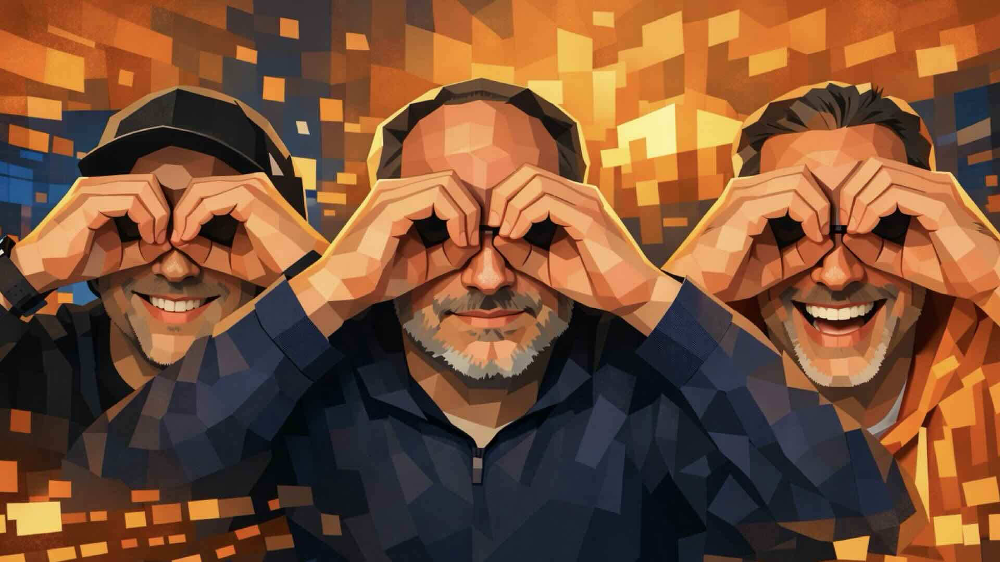

Apple Non-Keynote-Review, 4. März 2026, Visual Com-Podcast Ep. 94


Am 4. März, einem Mittwoch Abend, haben sich Thomas Riedel, Kai Heddergott und Gerhard Schröder zusammengesetzt. Nachdem Kai & Gerd zuletzt einen Re-Start des Podcasts im Februar durchgeführt haben und einen neuen Termin bekannt gegeben haben für den nächsten Livetalk, 4.3. um 13 Uhr, kündigte Apple für den Nachmittag eine Präsentation an. Also verschoben die zwei die Uhrzeit auf 19 Uhr und konnten so Thomas einladen. Der zusätzlich eingeplante Mark Zimmermann musste leider kurzfristig Absagen.
→ Nächster Livetalk findet am 22. April um 12 Uhr statt
Zusammenfassung
Mit Gastgeber Thomas Riedl besprechen Gerhard Schröder und Kai Heddergott die Apple-Produktvorstellungen vom März 2026 – ohne klassische Keynote, dafür mit einer dichten Reihe neuer Geräte. Zentrales Thema ist das neue MacBook Neo: ein Einstiegsgerät mit mobilem A16-Chip, das Apple erstmals in einem günstigeren Laptop-Segment positioniert und das vor allem auf junge Nutzer und den Bildungsbereich zielt. Am anderen Ende der Preisskala steht das überarbeitete MacBook Pro mit der kompletten M5-Chip-Familie, das insbesondere für KI-intensive Anwendungen und professionelle Medienproduktion ausgelegt ist.
Die Runde diskutiert außerdem das neue MacBook Air mit M4-Chip und erstmals 16 GB RAM als Standard sowie Apples Einstieg in den AR-Brillen-Markt mit der Apple Vision Pro 2 – inklusive neuer Funktionen, günstigerer Einstiegsvariante und einer wachsenden Entwicklergemeinschaft. Am Ende zieht das Team ein Fazit: Apple bedient mit dieser Produktstrategie bewusst beide Enden der Preisskala, bleibt dabei seiner Silicon-Strategie treu und stärkt das Ökosystem – von Schüler bis Profi.
Embed: https://youtube.com/live/M2bVXtCsBi0
Transkript (KI-bereinigt)
Hallo und herzlich willkommen zu einer neuen Folge von UND mit Kai Hedagott und Gerhard Schröder. Ich habe den Namen vergessen. Visualcom von dem Podcast Live Talk auf LinkedIn und YouTube. Heute sogar auf mehreren Accounts überall rund in diesem Internet.
Wir haben wieder ein Gast dabei und wir haben ihn gleich mit eingeblendet. Weil er eigentlich gar kein Gast mehr ist. Sondern bei diesem Thema eigentlich immer fast schon standardmäßig zum Team gehört. Wir begrüßen Thomas Riedel aus Köln. Einen wunderschönen guten Abend. Ich freue mich immer dabei zu sein. Ich frag mich zwar immer, warum ihr ein Droidbold zu einem Apple Podcast einlade, aber hey, warum nicht? Na ja. Wir sind doch kein Apple Podcast. Auch wenn wir heute wieder ein Schwerpunktthema wieder mal auf die Marke mit dem Apple haben. Wobei wir werden auch wie beim letzten Mal auch in Richtung Meta und Pico, der ähnlich ist, einfach mal kurz abschreifen. Weil es hängt doch sehr viel an der Stelle miteinander zusammen.
Na ja. Und so jemanden wie ein Droidboy dabei zu haben. Also das ist der früher der Mann gesagt, der alte Twitter-Händel von Thomas. Das ist natürlich immer ganz gut. Das soll nochmal ein anderer Blick drauf geworfen wird. Wir stehen eigentlich nicht im Verdacht, obwohl wir lange die Apple-Geräte benutzen, Fanboys zu sein. Aber na ja, es ist jetzt in den letzten drei Tagen wieder was vorgestellt worden. Das möchten wir heute zu dritt einordnen. Und deswegen brauchen wir einfach die Hilfe eines arrivierten Tech-Journalisten live bekannt aus Funk, Fernsehen und Finanzamt. Und deswegen brauchen wir Thomas Riedl einfach der das richtig einordnen.
Und fehlt noch Nummer vier für den Abend? Marc Zimmermann wäre eigentlich so gesehen. Also kurzer Hinweis. Thomas Riedl hatten total tollen und spannenden und höhrenswerten Podcast. Eben als der Metaverse-Podcast, jetzt der Spatial Realities-Podcast. Und wir hätten eigentlich heute noch einen weiteren Podcast dabei gehabt. Marc Zimmermann, der Beheise mit dem Podcast bestritten hat, The Next Big Thing. Also den Apple Vision Pro Podcast und der noch einen wirklich höhrenswerten KI-Podcast hat.
Ja, der ist heute aus gesundheitlichen Gründen. Schöne Grüße gehen raus. Leider der jetzt doch nicht dabei. Macht nichts. Denn ich bin mir ziemlich sicher, Marc wird beim nächsten Mal uns in dem Fall mit einer Prise Apple-Competenz und ähnliches nochmal unterstützen.
Aber heute haben wir ein Thema, das ist ein bisschen umfassend vor allen Dingen. Der Titel des Livestreams ist eigentlich so gesehen gleich schon falsch. Die Keynote-Review war so gesehen der Arbeitstitel. Wir hatten ursprünglich geplant, heute Mittag das Ganze zu machen. Und so unsere übliche Zeit, Mittags 12 Uhr. Dann kam die Info, Apple wird am heutigen Tag ein Event machen, am Nachmittag. Alles klar. Also gehen wir auf 19 Uhr, dann sind wir nach dem Apple-Vent nach der Apple Keynote. Und es gibt keine Keynote von heute, es gibt also ein Non-Keynote-Review von uns.
Ja, ich habe den Kollegen vom Apfelfunk, Malte Kirchner heißt er, glaube ich, dem habe ich zugehört als Vorberatung für die Show und der hat auch was Spannendes gesagt. Er hat gesagt, als der M1 rauskam, dachte ich auch erst mit den 8 Gigabyte, das wird nichts. Hat sich aber gezeigt im Alltag, dass das gar kein Problem war, weil das eben eine andere Speicherverwaltung war und eben nicht die Speicherverwaltung von Intel, wo man halt einfach unendlich viel Arbeitsspeicher auf den Prozess überwerfen muss, damit er einigermaßen läuft. Interessant ist hier der Fall wieder, dass wir eigentlich einen Chip haben, der zwar von letztem Jahr ist, aber so schnell ist, wie der M1. Also wie der Speicher von fünf Jahren.
Und da haben ja anscheinend die 8 Gigabyte gereicht, damit schließt sich so ein bisschen der Kreis. Vielleicht ist das tatsächlich kein Problem, wenn du jetzt nicht anfängst, richtige Videos schneiden zu wollen. Und das ist aber auch irgendwie klar, dass wir dieses Ding jetzt nicht dafür haben wollen, um den nächsten Avatar zu schneiden, sondern eher mal ein Klippchen zu schneiden, ein bisschen Video, Social Media Kram oder so, vielleicht noch mit KI. Dafür reicht das dann. Also deswegen, ich verstehe deinen Empfinden, aber dann ist dieser Laptop vielleicht auch einfach nichts für dich. Also du bist auch sowieso, glaube ich, eher der Pro-Nutzer.
Ich habe so ein 8 Gigabyte MacBook Air und für meinen normalen Bürokram, also meine Mitarbeiter haben da wesentlich mehr Rechenleistung, Arbeitsspeicher und alles andere, ich habe so eine kleine Mürre und für meinen, ich mache Präsentationen und selbst die paar Videos oder Podcastgeschichte, die hier für sowas hier mal irgendwo bearbeitet, wenn nicht eigentlich das irgendwie mitbeiltern machen. Es tut, es reicht.
Ja, spannend ist hier auch vielleicht noch mal anzumerken, dass, wenn jetzt hier ein mobiler Chip auf den Laptop kommt, dass das ja eigentlich bei den XR-Geräten zum Beispiel Gang und Gebe ist. Also da wurden die ja schon immer missbraucht für ganze XR-Anwendungen. Also wirklich grafisch sehr anspruchsvollen Kram. Okay, low poly dann hier Eiffel Tor und Max Zuckerberg sage ich nur, aber trotzdem wird ja ausgereizt. Das heißt, dass man da quasi einen mobilen Chip nimmt und auf eine sehr intensive Arbeitslast drauf wirft oder auch missbraucht. Das ist eigentlich nichts Seltenes.
Trotzdem ist natürlich bemerkenswert, dass das hier so quasi in die reguläre Produktlinie eingebaut wird von einem normalen Laptop. Das sieht man schon eher selten. Wir erinnern uns, es gab einige Smartphone-Hersteller, die versucht haben, das Smartphone zu einem Laptop zu machen, indem man das Smartphone mit einem Monitor und eine Tastatur in der Maus verbindet und zack, hast du deinen Laptop, hat nie so richtig funktioniert. Ich glaube, das lag auch oft daran, dass das Betriebssystem dann scheiße war und die video eigentlich gut gemacht war.
Beim MacBook Neo dachte ich jetzt auch irgendwie an die Chromebooks, die ja eigentlich auch in High End gedacht sind, waren am Anfang und die auch eigentlich sehr flott sind. Aber sie haben Chromebooks ja im Grunde jetzt mit der ChromeOS weggeworfen und bauen auf Android und da bin ich sehr gespannt, was sie da machen werden. Also wir erwarten eigentlich in diesem Jahr Android Notebooks, richtig dicke Dinger, auf Android läuft. Also von Google erwarten wir jetzt Notebooks, die mit Android laufen und das bedeutet, da ist ein mobiler Chip drin oder etwas, was mobil war vielleicht auch interessant und würde im Prinzip die gleiche Geschmacksrichtung haben wie jetzt hier das MacBook Neo.
Und da ist bemerkenswert, das finde ich jetzt wirklich spannend, die Beobachtung, dass in diese Richtung und Google und Android spricht ja zum Teil auch nur echt eine andere Klientel an, als die klassische Apple-Klientel eigentlich darstellt, dass man als Apple den Schritt als erster gemacht hat, um zu sagen, warte mal, da gibt es noch einen Marktsegment, in dem können wir vielleicht auch noch mit einem anderen Gerät mitspielen, weil die grundlegenden Technologien bis hin zum eigenen Chip, die haben wir ja.
Also es zeigt sich meiner mal nach dem Nachhinein dieser Schwenke auf Apple Silicon, war eine der allergewichtigsten strategischen Moves der letzten zehn Jahre bei diesem Unternehmen. Das macht sie auch einfach unabhängig und jetzt können sie fast schon damit spielen, was sie dann jetzt an Produkten machen, wenn sie sagen, dann nehmen wir eben das Gerät, die Geräteklasse mit der Chipklasse, schmeißen es mal in Würfelbecher und gucken, was dabei rauskommt und siehe da, vielleicht sind wir so konkurrenzfähig in einem Segment, was wir bislang gar nicht so bedacht hatten.
Ja, einer der vielleicht auch gar nicht so klein ist. Also mein grundsätzliches für Apple natürlich die Mac-Sparte, nicht die allergrößte, auch wenn sie die älteste ist, aber die machen ja sehr viel mehr mit Kopfhörern, wie mit einem Mac oder mit einem iPhone. Und für dem her ist das interessant, aber wenn man da irgendwie Growth noch haben will, dann ist das eben, indem man versucht, in Sparten rauszugehen, die cool sind und trotzdem günstig. Also es ist ja nicht jetzt das krasse Budget-Ding, wo man sagt, Plastikbomber total cheap, sondern eher so Education und so. Also es ist ja trotzdem noch lifestylig, trotzdem noch Apple hochwertig.
Okay, man hat dann halt so Dinge wie kein Display mit hoher Bildwiederholrate, wie heißt das bei Apple? Die Retina ist nah, wie heißt das? Aktuell heißt es nicht, sondern es habe ich jetzt vergessen, habe ich natürlich nicht so oft das Schippe, aber halt mit mehr als 60 Hertz, ja so, das zum Beispiel nicht. Oder Fingerabdrucksensor gibt es dann halt auch erst im Aufpreis und so. Wo kann ich sagen, genau, den gibt es in der günstigen Variante, gibt es den Fingerabdrucksensor nicht, aber du musst, wenn 100 Euro mehr und er speichert, dann kriegst du auch den Fingertouch.
Ich denke, das ist gerade, damit ist das günstige Gerät auch gerade für Schülersegment, also Education, als Ersatz im Prinzip Chromebook oder auch für das Schul-Ipad als Ersatz, weil ein Schul-Ipad mit Tastatur ist wesentlich teurer als jetzt dieses neue Notebook. Das ist abgefahren, geht auch so ein bisschen Richtung Windows Surface Pro, wie heißt das kleine Ding plus oder was?
Es gibt praktisch eine leichte Version, die auch ziemlich günstig ist und sehr leicht, das und die auch einfach nur zwei USB-C Anschlüsse hat und das war es dann so, aber reicht vollkommen und hatten eine Ordnung, ein gutes Display und hat eben auch ein ARM-based Prozessor, der flott ist, keinen Lüfter braucht und auch sehr gut ist, das fühlt sich an wie ein kleines MacBook und eine ähnliche freies Kategorie, also das muss man auch vielleicht ein bisschen mit reinnehmen, da ist jetzt kein mobiler Prozessor drauf, aber das ist ein Prinzip auch das, was beim Surface ganz gut funktioniert gerade, sind die Notebooks, auch wenn sie mit ihrer KI gerade so ein bisschen Schabernack machen. Das ist noch mal ein ganz eigenes Thema ja, auf multan-anmäheren Fronten.
Was mir auffällt ist bei der ganzen Geschichte und da nehme ich schon ein bisschen was vorweg zu den anderen Geräten, die vorgestellt worden sind. Wenn Apple was am unteren Segment vorstellt, dann, ich habe mal auch einige Kommentare auch bei Heise unter den Meldungen angeguckt von Lesenden und von Nutzerinnen, damit gemeckert, ja das hat es viel zu klein dimensioniert, also so diese 8-Gear-Baltfrage, die ich auch vorhin gestellt habe, keine Hintergrundbeleuchtung der Tastatur, man dann denkt, heute was wollt ihr denn eigentlich, das ist doch am unteren Segment und das gleiche beim Oberen, wenn dann irgendwie jetzt ein Gerät mit einem bürdig schnellen Prozessor vorgestellt wird, wer braucht denn so was, wird dann gefragt.
Also wir gehen einfach an die Ende, an beide Enden der Scala der Kunden und es wird immer gemoppert und irgendwie zeigt sich aber so, wenn man mal auch zurück guckt, Apple hat das immer wieder ausprobiert, auch im Consumer-Markt was zu präsentieren. Ich denke nur an das iBook, das ist schon über 20 Jahre her, davor war es der E-Mate, das war im Prinzip ein integriertel Newton in eine Tastatur, der war absolut für den Bildungsbereich gedacht, als dann die ersten PDAs aufkam Ende der 90er.
Und Apple hat das immer probiert, auch nochmal so ein 12-Zoll MacBook rauszuhauen, also hat immer geguckt, so wie läuft das, die kriegen wir da was kompensiert, manchmal habe ich auch das Gefühl, sie testen da auch ein bisschen das Zusammenpacken von Technologie und Wiederverwerten von anderen Entwicklungen und da sind sie sich eigentlich, bleiben sie sich treu und so wie Thomas schon sagt, sie können sich natürlich auch leisten, weil sie an anderen Segmenten so viel Umsatz machen, dass sie davon nicht abhängig sind, ob so ein neues Gerät jetzt wirklich gut performt am Markt oder nicht.
Wobei ich mir da sicher bin, also selbst wenn sie es nicht in allzu hoher Stückzahl verkauft, die Prozessoren sind schon produziert, die mussten da nichts Neues erfinden, die stecken da Sachen zusammen, die sie alle schon haben. Der Akku ist, hat wesentlich weniger Akkulleistung als ein MacBook Air, ja ungefähr die Hälfte, ja und erst das MacBook Neo ist sogar noch ein kleines bisschen ticker, dicker als das MacBook Air, das heißt die Komponenten und die Bauweise ist auch günstiger als von den teureren Geräten, die werden da trotzdem ihren Schnitt dran machen.
Ich glaube für die erzählt das Ganze, dass du einem Schüler, der von iPhone hat, da schau dir die Marktdaten aus den USA an, ja hohe Durchdringung von Apple Produkt, iPhone an der Stelle in der Schule, denen sagen kannst, wir bieten dir auch, du brauchst auch kein Chromebook oder auch kein Android-Gerät an der Stelle, sondern du kannst wie das Video auch sagt, du kannst mit uns, mit deinem iPhone und diesem neuen MacBook Neo komplett in der Wohlfühle Apple Ökosystem bleiben und ne Apfel mit Schloss, du bist auch noch Privacy, du bist hier sicher.
Aber sag mir mal, was sollen wir denn von diesem Namen halten? Also Neo ist halt neu, okay, aber das sagt ihr eigentlich überhaupt nichts aus darüber, was das eigentlich jetzt für ein Gerät sein soll. Zum einen interessant, dass sie es als Neo bezeichnen und tatsächlich der Kollege von hier Malte Kirchner von Apfelfunk meinte auch am Anfang eines Videos, sei kein MacBook, sie nennen es nur Neo, was falsch ist auf der Webstelle steht, MacBook Neo, aber er hatte das Gefühl, es ist so, also so als ob sie sich quasi von diesem MacBookding entfernen wollten, weil du hast kein MacBook, sondern du hast ein Neo und sie sagen auch Hallo Neo auf der Webseite und dann schied ganz klein oben drüber MacBook Neo.
Und warum Neo, es ist halt neu, aber es müsste doch eigentlich go small plus irgendwie was so heißen, weil dann würde es eigentlich etwas darüber aussagen, was für eine Art dieses Produktes nicht ist und nicht einfach nur MacBook neu. Vielleicht ist aber taterlich der Punkt wie bei einer gewissen Beauty Marke von Jade, Jade, Maybelline, Maybelline, Jade bis es jetzt noch Maybelline, das hat zehn Jahre gedauert diese Markentransition und wenn vielleicht, wie du schon sagst, vielleicht wird das Montag als MacBook Neo jetzt anfangen bis sie irgendwann mal das Neo bei MacBook drunterschreiben oder wie auch immer. Vielleicht ist das auch ein langsamer Prozess.
Erstmal in dem Motto die Markenbekanntheit mitnehmen, bis man so gesehen sich weiter davon weiter voneinander trennt, mal abwarten. Aber wo wirken? Das geht auch wieder nach innen das mit dem Neu, also das ist für uns auch neu, dass wir jetzt eben diesen Prozessor mit einer anderen Geräteklasse vereinen. Wir müssen es aber MacBook nennen, damit es noch erkennbar ist, aber es ist irgendwie neu zusammengeschraubt, also es ist Neo.
Ich habe das Gefühl, da wird nichts Neues eröffnet. Der Name Neo wird auch gar nicht überleben, sondern das ist jetzt nur, um einfach diese Marke zu setzen, aber ich glaube, das machen sie mehr für sich, als dass das wirklich eine Außenbedeutung hat, weil da eine Erwartung kann ich komplett verstehen, Thomas. Ja, was heißt denn hier neu? Was kommt denn jetzt? Das ist ja eher nichts neu. Ist ja nur die Zusammenstellung und die Preise, das ist ein Grund neu, vielleicht die neuen Farben noch. Aber naja, Sie haben ja schon ein MacBook, Sie haben ein MacBook Air, so gesehen darunter, Sie haben ein MacBook Pro.
MacBook SE wäre jetzt ja sonst eigentlich, also in der Mini, wenn man es richtig verwirrend, weil das gibt ja noch den Mac-Mini. Ja, egal, also ich glaube, wir haben die wichtigen Dinge von diesem Gerät mal durch oder wenn es auf ein wichtiges einfällt, ich würde sagen, wir schauen mal, weil kann ich das sehr viel schon angedeutet, einmal ans andere Ende der Preiskala.
Eine Sache muss man noch dringend sagen. Es ist sehr cool, dass Sie die Tastatur des Neo an die Farbe des Gehäuses angelehnt haben. Also du kaufst ja ein grünes oder ein gelb, Zitronengelbes MacBook und die Tastatur ist auch leicht gelb, finde ich cool. Das sind so kleine ich kann die mag ich sehr. Das haben Sie aber auch schon mit Ihren Wänden ein Mac, der holt. Da sind die Tastaturen ja auch schon mit diesem Farbton. Ja, das haben Sie aber dann übernommen, genau.
Und wenn man sich die Farben anguckt in den Video zum Neo, das sind sehr viele bunte und auch bombon Farben, die in einem Umfeld von jüngeren Menschen auch in der Gestaltung der Räume, in denen sie mit dem Neo sitzen, das passt ganz gut dazu. Also da haben Sie sich, glaube ich, echt Gedanken gemacht und gesagt, wie passt das farblich in die Lebensumgebung von denjenigen, auf die wir für die wir das Ganze gedacht haben. Ich glaube, da passt das ganz gut. Aber ich finde das auch schön. Diese Details die mag man einfach manchmal bei Apple, wenn Sie an sowas denken.
Okay, am anderen Ende des Preisspektrums, wir gehen jetzt mal von 500 Euro in Richtung dreieinhalb, viertausend Euro oder aufwärts. Und landen jetzt so gesehen bei einem MacBook Pro mit einem wesentlich größeren und schnelleren Chip und wiederum auch ein No-Brain-Feedscher. Das ist jetzt nicht, dass es ein MacBook Pro ist und auch nur, dass es ein größerer, neuerer, schönerer Chip drin ist, sondern welche gerade brutale KI-Rechenkapazität aus der Kiste aus einem Laptop rauszukötchen ist. Muss man jetzt bösartig zu formulieren.
Dann geben wir nochmal das ganz oberende Ende des Skala. Wir können uns ein neues MacBook Pro 16 Zoll mit dem M5 Max Prozessor 128 GB RAM und eine 8 Terabyte SSD kaufen und dann kostet uns das auch über 8.600 Euro. Wir können aber einsteigen in ein MacBook Pro 14 Zoll mit einem M5 Prozessor, nicht pro, nicht max, erst mal der ganz normale M5 und steigen bei knapp 1900 ein. Das ist so die Range der Pros, die wir jetzt haben, wo die komplette M5 Prozessor-Familie untergebracht ist.
Wo man sich jetzt fragt, okay, das war auch überfällig, das war eigentlich auch der nächste Take. War der jetzt der M5 in diesen Geräten? Aber viele fragen sich, ja Moment mal, jetzt muss ich auf einmal auf Sachen gucken, wie viele Prozessorkerne sind da drin, in welcher Kombination, wie unterscheidet sich der M5 Pro mit 16 Prozessor-Kern vom M5 Max mit 40 Prozessor-Kern und was soll das Ganze, dass wir in mobile Geräte so eine Kraft reinpacken.
Was meinst du denn Thomas, was ist der Hauptgedanke in mobile Geräte, das habe ich erstmal nur die Pros genannt, wir kennen auch gleich über das Air-Sprechen, das ist ja entsprechend auch aufgewertet worden, welche Grundgedanke steckt dahinter, mobil solche leistungsfähigen Geräte auf dem Markt zu bringen?
Ich glaube, der Grundgedanke steckt dahinter, dass Apple das leistungsstärkste Laptop der Welt haben will und einfach zeigen will, dass sie es schaffen, das in so eine kleine Scheibe rein zu pressen. Also das ist einfach technologisch, das absolute Non-Plus Ultra, wenn jemand Filme baut oder KI benutzt, dann gibt es keinen Weg an diesen Geräten vorbei, das ist die Message, die sie seit Jahren schon haben und wenn du professionell irgendwas mit Filmen oder Fotos oder KI jetzt auch machst, interessant übrigens, das ist relativ schwach mit KI und trotzdem kaufen alle diese Mac-Minis gerade auf, wie warme Semmeln, dann willst du so ein Gerät haben und ich glaube, das ist genau das, was dahinter steht, einfach die volle Leistung wie ein Ferrari, wenn du auf der Rennstrecke sein willst, dann kaufst du dir praktisch so ein Ding.
Also es ist natürlich brutal, dass so ein Scheibchen so viel kosten kann. Ich habe gerade eben versucht den Preis nachzuvollziehen und habe mal alles maximal angeklickt. Ich war nur bei 5000. Ja, ich glaube, du kannst noch diese Nanotextur-Display, glaube ich, auch noch dazu buchen. Dann kommst du auch zu.
Diese, Entschuldigung, Armin, diese Themen, die werdet ihr, das dritte Hinweis, immer wieder aktuell vertiefen können bei Thomas. Wenn man in Köln sitzt, dann muss man natürlich auch noch mal Kunz und Seil misslogisch, ne? In einer so katholisch geprägten Stadt, sagt der, der in Münster lebt.
Genau. Also auf jeden Fall zu den Themen bei Thomas Reinhörn und wir leihen ihn uns ja mit seiner Expertise, das merkt er ja immer wieder hier aus, weil da ist er einfach tiefer drin. Und ich finde, das war ganz passend, dass wir hinten raus, wenn wir darüber gesprochen haben, was es denn so dennächst auf die Augen und für die Augen gibt. Und das sagen wir hier in einem Podcast, der auch viele Leute wahrscheinlich hören werden. Stichwort hören, Gerd.
Noch mal hinten raus, noch mal der Hinweis. Genau. Wer es in der letzten Folge mitbekommen hat, und wer nicht, darum machen wir jetzt ja die Wiederholung. Wir sind ja mal früher ganz Anfang 2017, weil ist das ein Audio-Podcast gewesen. Also nur zum Hören. So, Konserve, zum Mitnehmen, so, Offen-Ipod. Und wir haben uns ja dann Kai und meiner einer immer mehr in Richtung Live-Kommunikation, so wie jetzt hier, gerade im YouTube und LinkedIn Livestream, um auf die Kommentare der Nutzer einzugehen. Das machen wir jetzt gleich auch noch. Und wir kommen hier, wir abbacken zu so Ruths und wirts wieder auch als reine Audio-Konserve. Will nicht nur zum Hören, zum Mitnehmen für die Hosentasche oder so. Ihr wisst schon, 1000 Songs auf deinem Smartphone. Also es gibt von uns keine 1000 Folgen, wir sind auf den Weg Richtung 100, aber ja, es gibt bald wieder ein Audio-Format.
Genau. Und jetzt lasst uns doch gucken, was wir noch an Kommentaren haben. Hoffentlich noch von Leuten, die immer noch dabei sind, nach den gut eineinhalb Stunden. Ich glaube, du kannst das dann letzt einblenden. Okay, Jan-Henrich schreibt, ich habe mir das MacBook Neo vorbestellt als Zitrone. Das ist eine der Farben. Das geht natürlich dann ins Gelbe. Also die haben wir schon den ersten Kunden. Sehr schöne Male, super schöne Farbe. Super gelungen. Total.
Für Einmessage liebe ich Apple, jede Einmessage auf jedem Device. Sag Thomas Schlebach, das ist auf jeden Fall nochmal ein Argument, vielleicht zu sagen, Mensch, das geht da wunderbar, dann rüber auch auf das mobile Gerät. Das geht zwar auch auf der anderen MacBooks, aber ich glaube, das hast du ja von angesprochen, Gerd. Für die Zielgruppe, für die das Ganze gedacht ist, das ist die Messenger-Zielgruppe, die einfach so miteinander kommuniziert. Genau.
Und dann hätten wir noch einen dritten Abschlusskommentar. Wir haben euch diesmal eben nicht zwischendurch immer reingeblendet. Dann gab es auch mehr Kommentare und wir sind auch sonst immer mithaft unterwegs. Schon klar, aber so, einen letzten Namen noch. LinkedIn-User sagt, guten Abend und danke für die interessante Diskussion.
Damit beschließen wir die Runde und möchte, habt ihr noch abschließende Worte, sonst mache ich die letzte Formulierung, die bei uns immer am Ende gehört. Ich finde auch den User ganz toll, Restream IO, der gesagt hat, Message is from audience, so display here. Aber sehr schön. Kai, noch was oder? Mach du den Abschluss. Gut, dann sage ich einfach nur die übliche Formel, die in den heutigen politischen Zeiten einfach in meinen Augen geboten sind, an der Stelle zu hören. Good night und good luck, denn die passen auch zu Ortzeit.